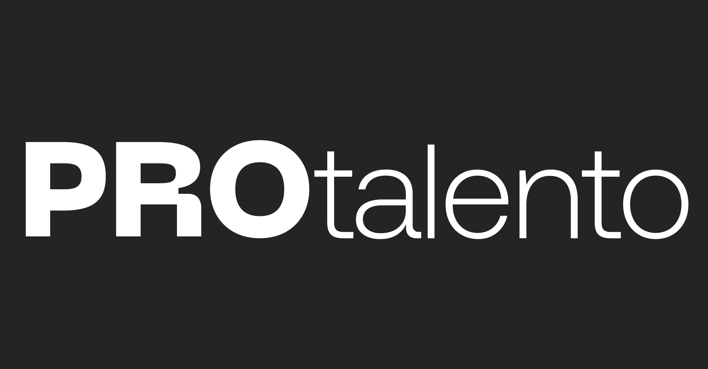

Jose Luis Maldonado Padilla
Desarrollador Full Stack
Desarrollador Full stack con competencias para la creación
y el desarrollo de sitios y aplicaciones web a través de HTML, CSS, Python
Django, SQL.
Desde las cuales, género soluciones digitales que maximicen
la tasa de enganche de los usuarios a los servicios en línea.
Caracterizado por la innovación, la solución creativa de problemas,
el pensamiento análitico y el trabajo en equipo
Educacion
Ago 2023 - Feb 2024
Bootcamp - Fullstack Developer Python
Realice diferentes proyectos en la plataforma de ADA SCHOOL que involucraban diversas tecnologías para el desarrollo Web (HTML, CSS, Python, Django) , frameworks como (Django), Servidores Web, MySQL, así como control de versiones (GIT).
Desarrollador Full stack
ExperienciaHTML
CSS
Python
Framework
ExperienciaDjango
Otras tecnologias
ExperienciaSQL
OFFiCE
HABILIDADES TÉCNICAS
HTML, CSS, Python, Django programación orientada a objetos, manejo de control de versiones Git, GitHub Análisis de datos mediante Pandas / Numpy/ Plotly/ Scikit-learn/. Manejo de base de datos relacionales MySQL.
Mis Proyectos
Aplicación de registro de usuarios y Lista de tareas-Django
Creé aplicación usando Django para back end y template para el front end la cual permite a los usuarios hacer lo siguiente:
Funcionalidad CRUD: Los usuarios pueden poder crear nuevas tareas. Mostrar una lista de todas las tareas. Permite la edición de tareas existentes. Permite eliminar tareas. También permite el registro de usuarios en la base de datos y poder entrar con su usuario registrado.
Analisis de Datos de un Hospital - Python
Realice Todo tipo de Grafico estadistico basandome en la base de datos de un Hospital Utilizando Pandas,Numpy,Plotly,Scikit-learn
Tales como numero de fallecidos Hombres o Mujeres , Mas Muertes por rango de edad , Mujeres y Hombres Fumadores Rango de Muertes , Limpieza de datos,Eliminacion de datos duplicados , Eliminacion de datos atipicos, Anemia en Hombres y Mujeres y su rango de fallecidos, Realize Graficos de : Torta,Histograma,lineales,de dispercion,barras de error,